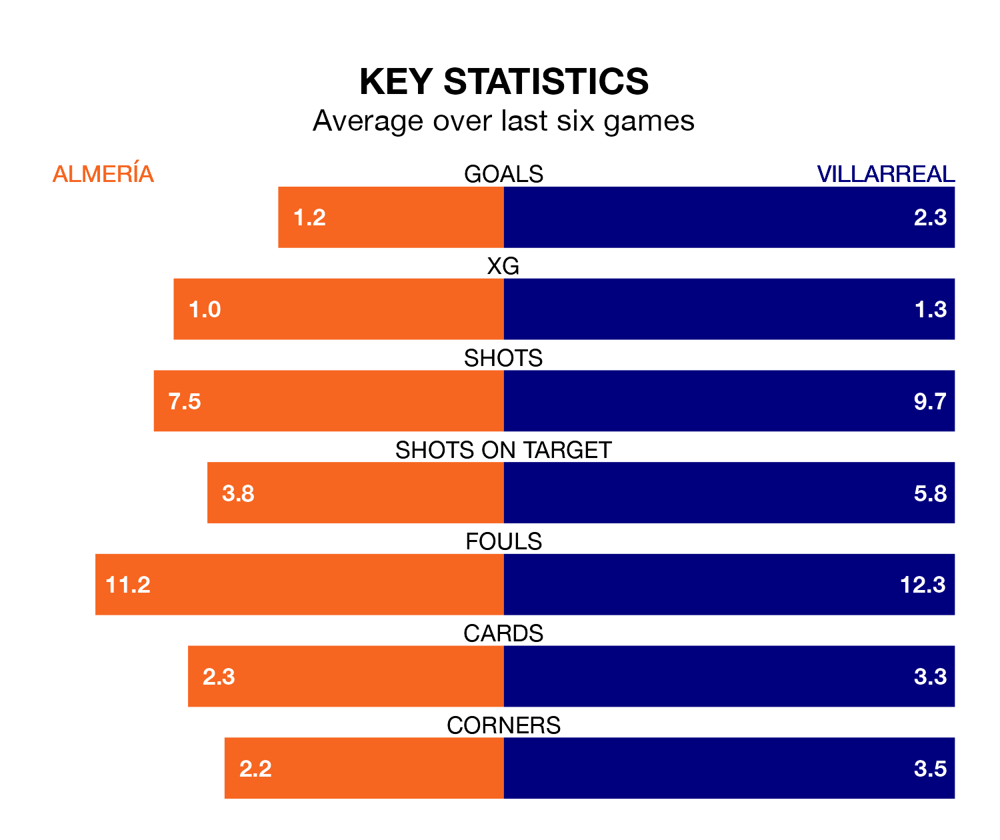

Villarreal travel to Almería on Sunday in La Liga.
The visitors come into the game on the back of a draw in their last match, having tied with Athletic Club Bilbao 1-1 away, with a goal from Dani Parejo.
Almería also drew their last match, 2-2 against Real Sociedad, with their goals scored by Adrián Embarba.
Almería are bottom of the table after 31 games, of which they have won one and drawn 11, earning 14 points.
Villarreal are 11 places ahead of the home team in ninth, with 10 wins and nine draws putting them on 39 points.
With 30 goals in 31 games so far this season, Almería are scoring at below the league average rate with 1.0 goals per game. And they are conceding more than average, letting in 62 goals at a rate of 2.0 per game.
The visitors, meanwhile, are above average scorers, with 1.6 goals per game, compared to a league average of 1.3. They have conceded 1.7 goals per game.
In the last 10 years, Almería and Villarreal have played each other on seven occasions. Villarreal won five of them and they drew twice.
On average, Almería scored 0.7 goals and Villarreal 2.7 in those matches.
Their last meeting was on September 17, when Villarreal won 2-1 at home.
Villarreal's Álex Baena is the league's most creative player, racking up nine assists in 28 appearances so far this season.
For Almería, Lucas Robertone and Largie Ramazani have set up the most goals, having laid on five assists apiece to date.
The hosts are in disappointing form in La Liga, with one win and three draws from their last six games.
With four wins and a draw over that period, Villarreal's form is much better – they have taken 13 points from 18, compared to Almería's six.
Updated: 11:31 (UTC), 15/04/24